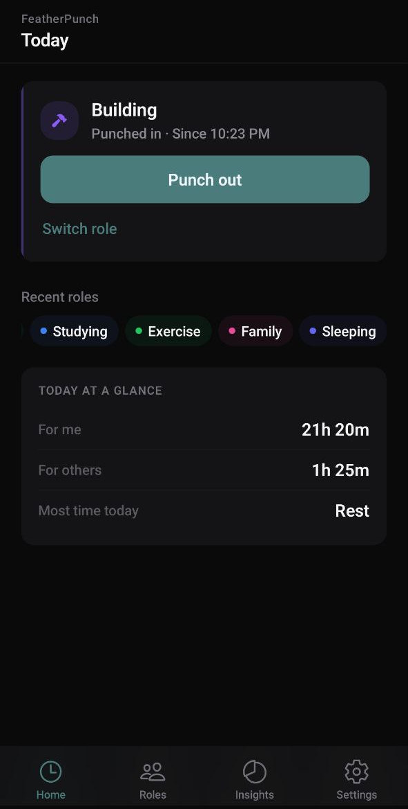
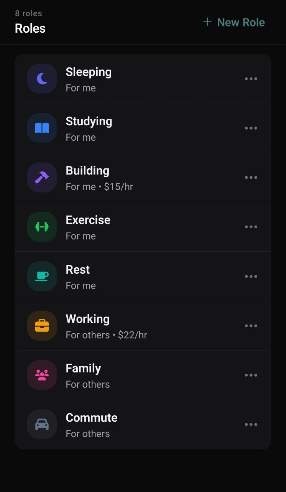
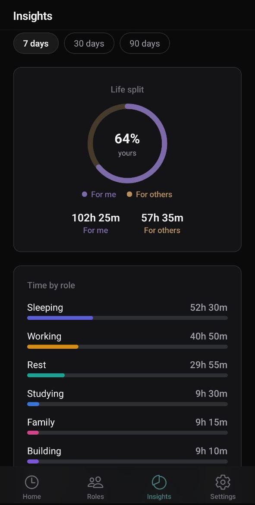
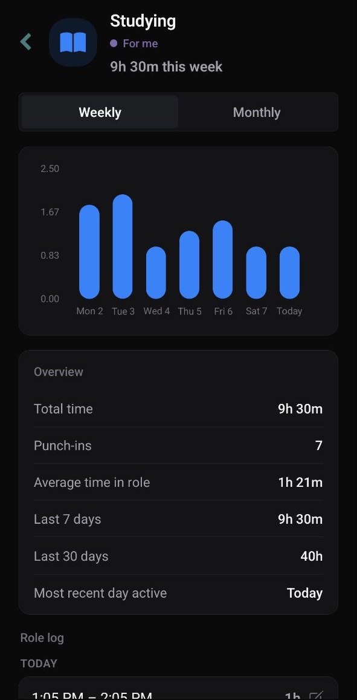
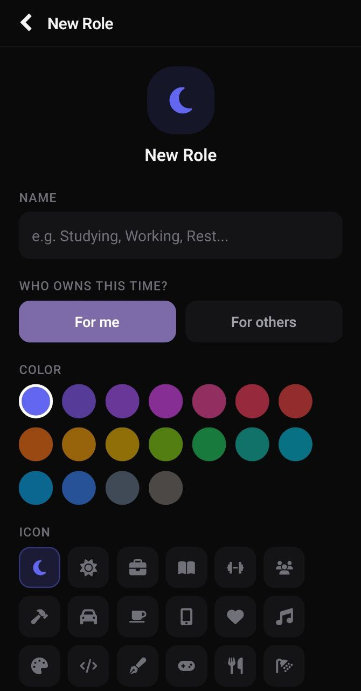

FeatherPunch helps you punch into the roles you live and see where your time truly goes.
Not "manage time better."
We spend so much of life giving time to work, responsibilities, and other people. FeatherPunch helps bring that time into view — and shows how much of it is truly yours.
This is not another task tracker. It's a quiet way to see the roles you actually live.
Sleeping, Working, Building, Family, Rest — and tag each as "me" or "other."
One active role at a time. Switch when life switches.
Honest views of your day, your week, and who your time belonged to.
What FeatherPunch reveals:
Reflective, not analytical. Built to help you see, not to pressure.
A few screens from the app.





Built to reflect, not pressure.
FeatherPunch — the roles you live, in view. By karuifeather.